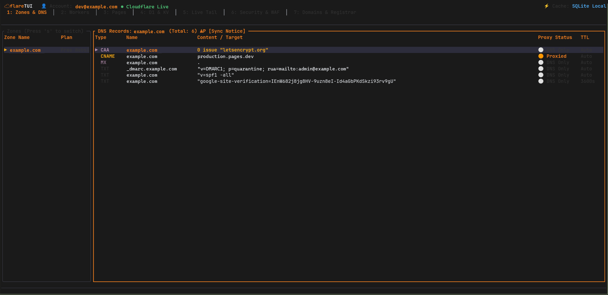

Cloudflare Management,
Native to your Terminal
A fast, keyboard-centric, production-ready Terminal User Interface for Cloudflare. Manage DNS, Workers, Pages, D1 SQL, Live Tail, Security WAF, and Zero Trust Tunnels without browser context-switching.
cargo install flare-tui
curl -sSL https://get.flaretui.dev | bash
git clone https://github.com/KidusAlemayehu/flareTUI && cd flareTUI && cargo build --release

Built for Edge Engineers & DevOps
Everything you need to orchestrate Cloudflare without leaving your tmux or terminal workflow.
Interactive DNS & Zones
Instant orange-cloud proxy toggle with p, inline record editing, search filtering, and standard RFC-compliant BIND zone exports (x).
Edge Compute & Bindings
Inspect scripts, routes, compatibility flags, and connected storage bindings (D1, KV, R2, Queues, Secrets) directly from an embedded inspector.
Pages & Instant Rollback
Review deployment histories, inspect live build logs, and trigger single-key instant rollbacks with full safety verification.
D1 SQL, KV & R2 Storage
Execute SQL queries on edge D1 databases with pagination and presets, browse KV namespaces with pretty JSON formatting, and inspect R2 buckets.
Real-Time Live Tail
Stream worker execution logs over WebSockets with trace-v1 protocol. Live regex filter with /, freeze streams with Space, and inspect raw JSON payloads.
WAF & Security Analytics
Inspect incoming security events, mutate firewall rules, shift priority orders, and analyze threat scores and top anomaly vectors by country and ASN.
Cloudflare Registrar
Manage WHOIS privacy, DNSSEC verification, auto-renewal toggling, and domain transfer locks with live confirmation modals.
Zero Trust Tunnels & WARP
Monitor edge Cloudflare Tunnels and ingress hostname routes. Control local warp-cli (connect, disconnect, mode cycling) right from the TUI.
Offline-First SQLite Architecture
Cold-boots in milliseconds using an embedded SQLite database (~/.cache/flaretui/cache.db). Fully functional even when disconnected.